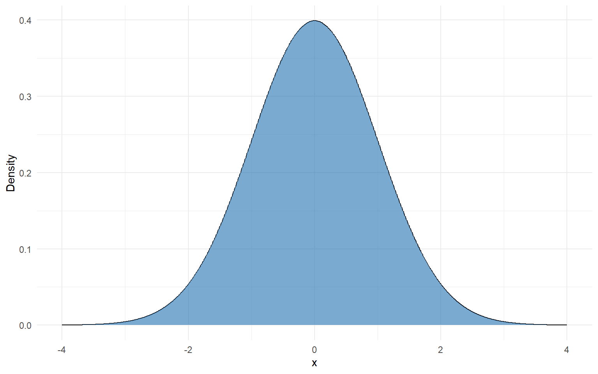
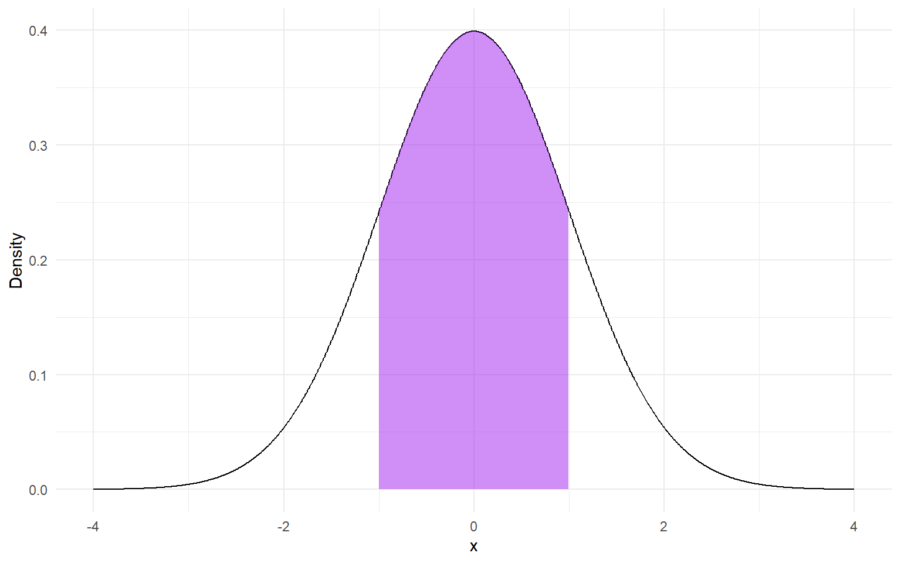
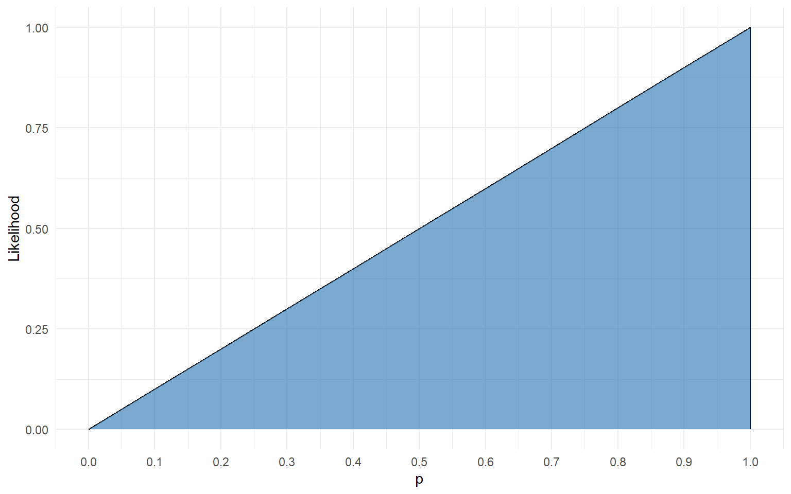
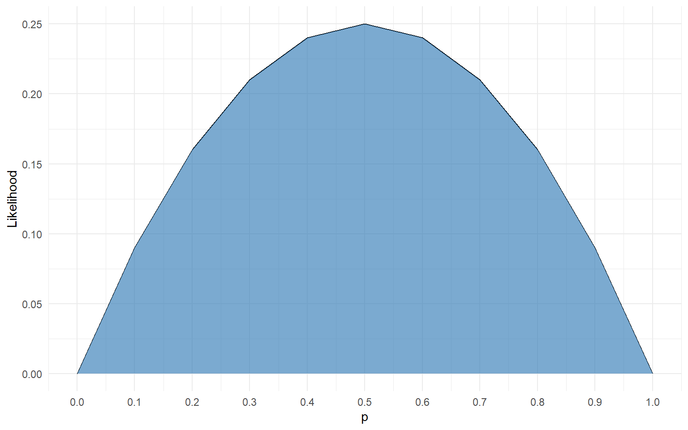
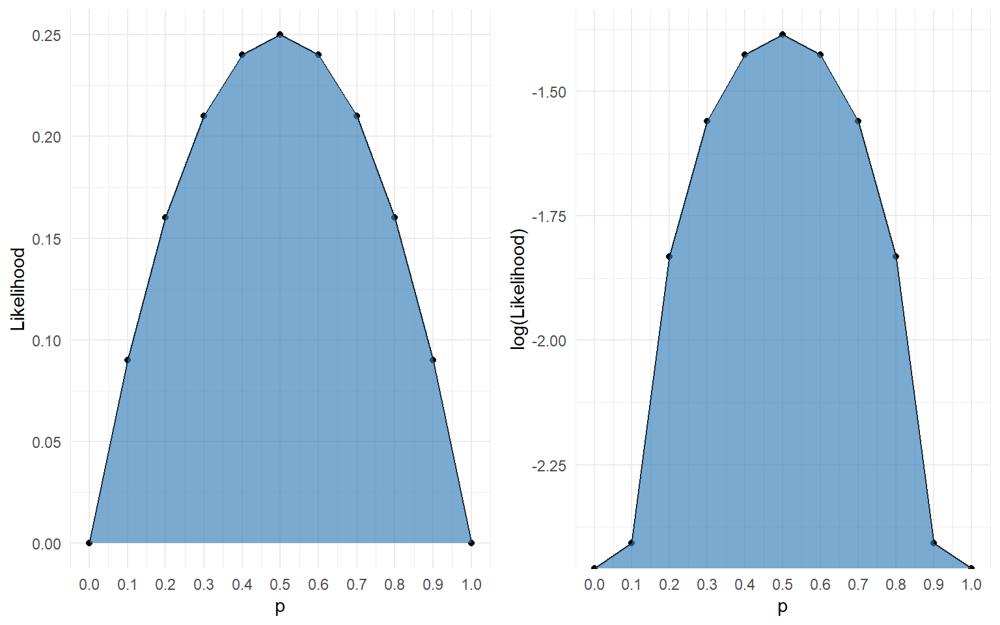
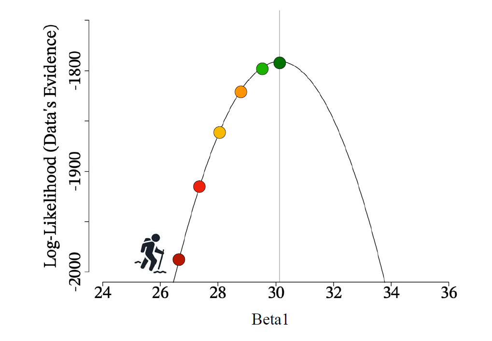
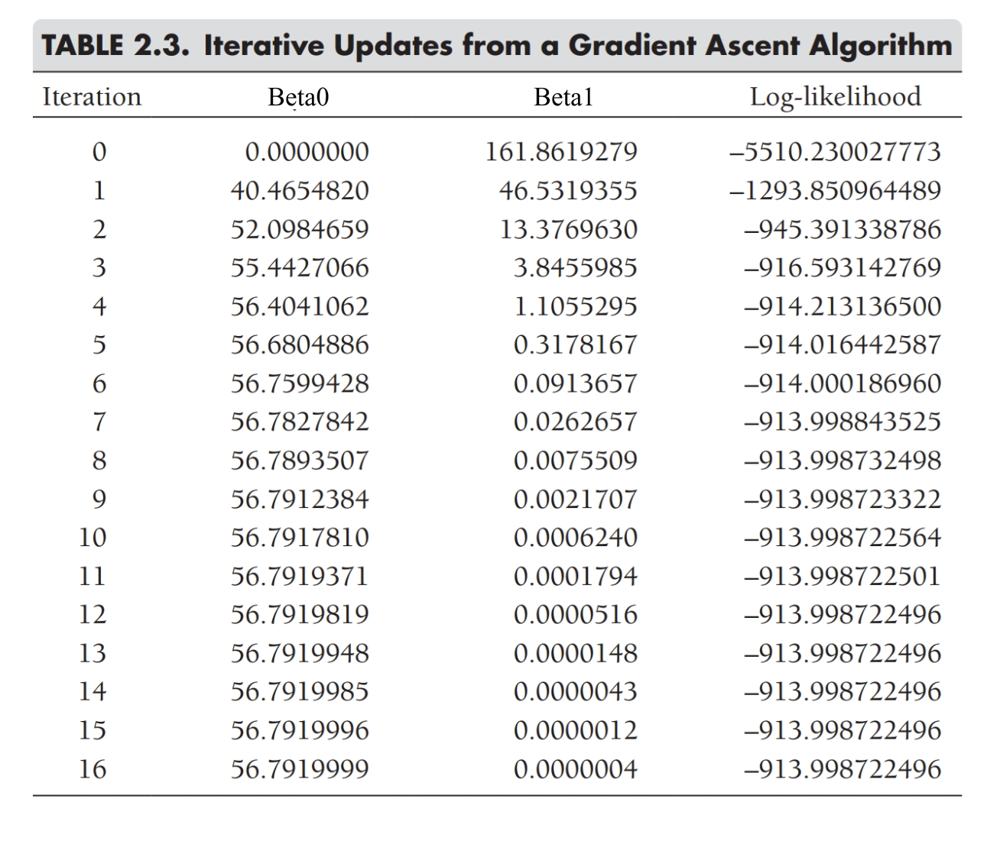

Lecture 12: The Model Based Perspective
Probability and Statistics

Probability theory links data with parameters.
When we talk about probability distributions, we usually think of things as:
- Parameters: fixed quantities (knowns)
- Data: random variables (unknowns)
The Bernoulli Distribution
The Bernoulli distribution can be written
\[P(y_i | \pi)=\pi^{y_i}(1-\pi)^{1-y_i}\]
Or, alternatively
\[P(y_i | \pi) = \pi(y_i) + (1 - \pi)(1 - y_i)\]
Where \(y_i\) is always 0 or 1.
As a probability distribution, we will treat \(\pi\) as known, and use it to define realizations of \(y\)
Probability Mass Function
If I sample one gummy bear and \(\pi_\text{pineapple} = .2\), then the distribution (PMF) of whether I draw a pineapple gummy bear in my sample is:

We like mass functions because each bar represents a discrete probability
The Normal Distribution
The normal distribution is a continuous distribution with two parameters: \(\mu\) and \(\sigma\).
It can be written:
\[P(x_i | \mu, \sigma) = \frac{1}{\sigma\sqrt{2\pi}}e^{-\frac{1}{2}(\frac{x_i - \mu}{\sigma})^2}\]
The standard normal distribution is a special case of the normal distribution where \(\mu = 0\) and \(\sigma = 1\)
We can plot a continuous probability distribution with a density plot (PDF)
Normal Density Plot

Densities and Probabilities
Densities are a bit confusing, because they aren’t probabilities. They are the height of the distribution at any given point, scaled so that the entire area under the curve is equal to 1.
In terms of probabilities, we usually talk about them by “slicing up” the distribution.
For example, when we say that 68% of all observations lie within 1 SD of the mean, that means, literally, that 68% of the area under the curve is between -1 and 1
Densities and Probabilities

What Does This Do for Us?
We’re not (all) probability theorists. Most of us are applied statisticians.
So how does this help us?
Specifically: What is different about what we usually do in the real world from what we just described?
We have data and want to estimate parameters
Our situation is reversed! The data are known, parameters are not!
Enter: Likelihood
A likelihood function switches things around, and assumes data are known and parameters are not.
BUT!
A likelihood function is not a probability function!
If we call \(\boldsymbol{D}\) our data, and \(\boldsymbol{\theta}\) our space of parameters (\(\mu\) and \(\sigma\) for a normal distribution), the function we are working with is still conceptually \(P(\boldsymbol{D}|\boldsymbol{\theta})\)
- This is a bit weird because we know \(\boldsymbol{D}\) and are trying to estimate \(\boldsymbol{\theta}\)
- Which is NOT the same as \(P(\boldsymbol{\theta} |\boldsymbol{D})\)
- We need Bayes’ rule for this, more to come
- To avoid confusion usually write likelihood functions like this \(\mathcal{L}(\boldsymbol{\theta};\boldsymbol{D})\)
- This is because with fixed \(\boldsymbol{D}\) and unknown \(\boldsymbol{\theta}\), the function \(P(\boldsymbol{D}|\boldsymbol{\theta})\) won’t sum to 1 under the curve
- It would only do this for fixed \(\boldsymbol{\theta}\) and unknown \(\boldsymbol{D}\)
Turning the Tables
Let’s imagine we flip a coin, but know nothing about coins. The coin lands on heads (we will treat Heads = 1, Tails = 0).
What is the likelihood for different values of \(\pi\)?
Let’s figure it out by plugging in some different values to our Bernoulli function from before (Slide 4) Let’s start with \(\pi=0\)
\(\mathcal{L}(\pi = 0; y = 1) = \pi(1) + (1 - \pi)(1 - 1) = 0(1) + 1(0) = 0\)
Unsurprisingly, the likelihood of the “true” probability of a coin landing on heads being zero, when it has landed on heads, is zero.
Turning the Tables
What about \(p = .25\)?
\(\mathcal{L}( p = .25; y = 1) = p(1) + (1 - p)(1 - 1) = .25(1) + .75(0) = .25\)
What about \(p = .5\)?
\(\mathcal{L}( p = .5; y = 1) = p(1) + (1 - p)(1 - 1) = .5(1) + .5(0) = .5\)
What about \(p = .75\)?
\(\mathcal{L}( p = .75; y = 1) = p(1) + (1 - p)(1 - 1) = .75(1) + .25(0) = .75\)
What about \(p = 1\)?
\(\mathcal{L}(y = 1; p = 1) = p(1) + (1 - p)(1 - 1) = 1(1) + 0(0) = 1\)
Likelihood Function of One Coin Flip Landing Heads

Maximum Likelihood
Note that unlike a probability function, the \(x\)-axis of a likelihood function is the parameter (in this example \(p\)), not the random variable (the outcome of the coin flips).
The goal of maximum likelihood, is to find the parameter value that maximizes the likelihood function.
In this case, the “likeliest” probability value to produce exactly one coin flip landing heads is 1.
We can also tell from this exercise that likelihoods are not probabilities. How?
The area of the graph of the likelihood function is not 1
Likelihood does not have a clear interpretation the way probability does. It is a measure of the strength of evidence for various parameter values, but it doesn’t really have a precise meaning
A Slightly More Complex Example
What is the maximum likelihood value for one flip landing heads, then one flip landing tails?
How might we approach this problem?
To get the joint probability of two independent events, you take the product of each of their probabilities. So we solve for flip 1 for a given \(p\), then flip 2 for that \(p\), and multiply them
Two Coins
\(p = 0\)?
\(\mathcal{L}(p = 0; y_1 = 1, y_2 = 0) = \mathcal{L}(p = 0; y_1 = 1) \times \mathcal{L}(p = 0; y_2 = 0) = (0)(1) = 0\)
\(p = .25\)?
\(\mathcal{L}(p = .25; y_1 = 1, y_2 = 0) = \mathcal{L}(p = .25; y_1 = 1) \times \mathcal{L}(p = .25; y_2 = 0) = (.25)(.75) = .1875\)
\(p = .5\)?
\(\mathcal{L}(p = .5; y_1 = 1, y_2 = 0) = \mathcal{L}(p = .5; y_1 = 1) \times \mathcal{L}(p = .5; y_2 = 0) = (.5)(.5) = .25\)
\(p = .75\)?
\(\mathcal{L}(p = .75; y_1 = 1, y_2 = 0) = \mathcal{L}(p = .75; y_1 = 1) \times \mathcal{L}(p = .75; y_2 = 0) = (.75)(.25) = .1875\)
Two Coins

Maximum Likelihood
To find the maximally likely value, we simply find the highest point on this graph.
In this case, the most likely value of \(p\) to produce one heads and one tails in two coin flips is \(p = .5\)
Log Likelihood
Once we start getting a lot of data, we wind up multiplying a lot of probability values together.
If we have a dataset with \(N\) rows, our likelihood function becomes:
\[L(\boldsymbol{\theta}; \boldsymbol{D}) = \prod_{i=1}^N \mathcal{L}(\boldsymbol{\theta}; d_i)\]
What happens when we multiply a lot of probability values (always between 0 and 1)?
The product becomes increasingly small, so small computers can’t handle it!
So what if we take the log? How does that change things?
Log Likelihood
Product Rule: \(\log(A \times B) = \log(A) + \log(B)\)
Applying the product rule:
\[LL(\boldsymbol{\theta}; \boldsymbol{D}) = \log\big(\prod_{i=1}^N \mathcal{L}(\boldsymbol{\theta}; d_i)\big) = \sum_{i=1}^N \log\big(\mathcal{L}(\boldsymbol{\theta}; d_i )\big)\]
Now instead of multiplying lots of decimals, we wind up adding lots of (negative) numbers!
- (The log of any number \(x\) where \(0 < x < 1\) will be negative)
This both helps with computation and means we don’t have extremely small numbers to deal with multiplying:
- Addition is faster than multiplication
- Small numbers are annoying/hard to represent
- Computers can’t go to infinite decimal places
Rank order is preserved under log transformation, so this doesn’t change our search for the maximum point.
Finding the Maximum: Grid Search
The most brute force approach to finding the maximum is grid search.
This just involves plugging in as many possible parameter values as possible to the likelihood function, and choosing the largest value. Because the rank order is preserved, it doesn’t matter if we use likelihood or log likelihood.

Normal Distribution Likleihood
The same logic applies to any distribution:
\[LL(\boldsymbol{x}| \mu, \sigma) = \sum_{i=1}^N \log\bigg(\frac{1}{\sigma\sqrt{2\pi}}e^{-\frac{1}{2}(\frac{x_i - \mu}{\sigma})^2}\bigg)\]
We can plug in for different combinations of:
- \(\mu\)
- \(\sigma\)
Then take our variable, \(\boldsymbol{x}\), and sum up the log likelihoods for all of the observed values in our variable.
The combination of \(\mu\) and \(\sigma\) with the largest log likelihood are the maximum likelihood estimates of those parameters.
Linear Model Likelihood
In a general linear model, we assume the residuals are normally distributed with a mean of 0. Put another way, each observation for the outcome variable \(y_i\) follows a normal distribution with mean \(\hat{y_i}\) and residual variance \(\sigma_{\epsilon}\)
\[LL(\boldsymbol{y}| \boldsymbol{\beta}, \sigma) = \sum_{i=1}^N \log\bigg(\frac{1}{\sigma_{\epsilon}\sqrt{2\pi}}e^{-\frac{1}{2}(\frac{y_i - \hat{y}_i}{\sigma_{\epsilon}})^2}\bigg)\]
Where
\[\hat{y}_i = \beta_0 + \sum_{p=1}^P \beta_p x_{ip}\]
And We plug in for different combinations of:
- \(\beta_0 \dots \beta_P\)
- \(\sigma\)
Grid Search Alternatives
When you have a continuous distribution, like a normal distribution, grid search is often intractable.
There is too much data and too many possible parameter values to search across. Finding the peak would be very slow going.
A popular alternative is based on “hill climbing” algorithms
These are more formally referred to as gradient ascent or gradient descent
Gradient ascent: Trying to find the peak of the distribution
Gradient descent: Trying to find the bottom of the distribution
Gradient Ascent/Descent
Procedure:
- Step 1: Try a random parameter value (or combo of parameter values)
- Step 2: Check the log likelihood
- Step 3: Try another value that’s slightly larger than the starting value
- Step 4: Check the log likelihood
- Step 5:
- If the log likelihood in Step 4 increased, try a value larger than the value(s) in Step 3
- If the log likelihood in Step 4 decreased, try a value smaller than the value in Step 1 for at least one parameter
- Repeat process until change in the log likelihood is (approximately) 0 between steps
Hill Climbing

Gradient ascent is like trying to find the peak of the hill
Iteration Table

As we try different values, we check if the log likelihood increases or decreases, and stop once the change between iterations gets close to zero